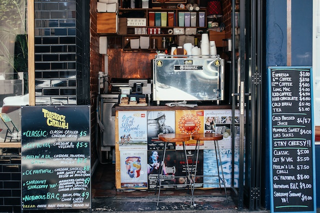
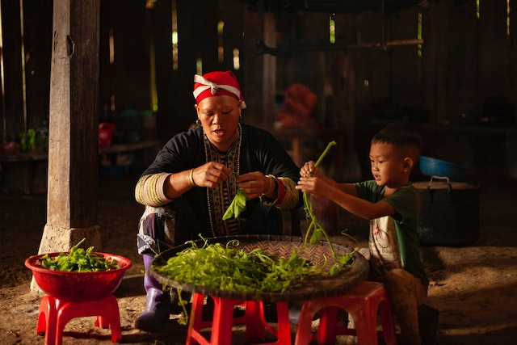
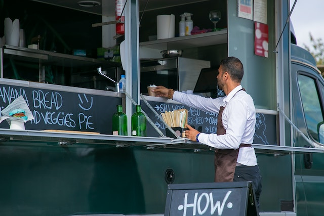

😀Bienvenidos, somos un sistema de información que te permitirá acceder de manera más fácil a restaurantes, comercios u/o campesinos que comercialicen sus productos en el área que te encuentres, con la particularidad de que nuestra principal característica es que te acercamos a pequeños comerciantes, esto con el fin de brindar una mano a comercios en crecimiento que con la expansión de las grandes compañías han visto disminuir sus ingresos.😀
Mejorar la calidad de vida de campesinos y pequeños comerciantes, así como de nuestros clientes, al permitirles una mejor conexión entre estos y la oportunidad de competir con grandes comercios, esto mediante la construcción de un sistema informativo que te da recomendaciones según tus necesidades por tu ubicación actual.
Reunir a pequeños comercios y ponerlos al alcance de todos con solo buscar, disminuir la brecha comercial entre empresas top y microempresas en surgimiento.